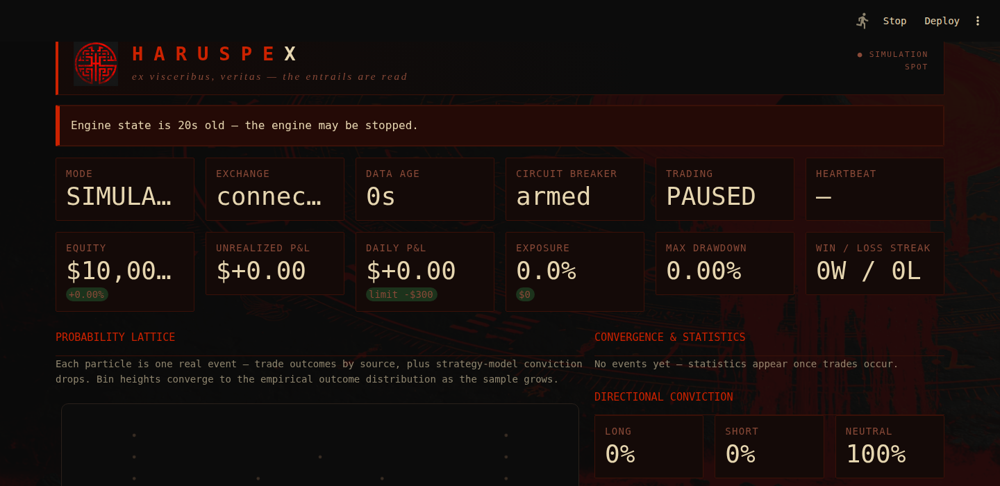

Inspect market state and system health before capital is exposed.
IKONIC HAUS / SYSTEM 001
Markets leave traces.
HARUSPEX reads them.
A local-first cryptocurrency research, simulation, risk-management, and Kraken Spot execution platform—built for disciplined operators who want visibility before action.
- Simulation first
- Kraken Spot
- Local credentials
- No hidden telemetry

Actual interface preview. Performance figures shown are not claims of future results.
Move from simulation to paper trading through explicit safety gates.
Enable live Kraken Spot execution only when configuration is complete.
THE PRODUCT
Serious trading software without the black box theater.
HARUSPEX is designed around transparency: observable engine state, explicit risk limits, readable trade statistics, and a clear progression from synthetic simulation to real-data paper trading and—only when deliberately enabled—live execution.
It is not a promise of profit. It is a disciplined operating environment for testing, monitoring, and executing a defined trading process.
CAPABILITIES
Built to show its work.
Every important state is visible, every live step is gated, and every risk control exists outside the strategy layer.
A/01
Probability Lattice
Visualize observed outcomes as the sample grows, separating empirical event distribution from model conviction.
A/02
RISK
Independent risk layer
Position sizing, exposure limits, daily-loss controls, and circuit breakers remain separate from trade logic.
A/03
LOCAL
Local-first operation
Your configuration, state, and API credentials remain under your control. No mandatory cloud account or hidden analytics.
A/04
Operational visibility
Monitor connectivity, data freshness, heartbeat, exposure, drawdown, and execution mode in one control surface.
A/05
A deliberate path to live trading
Simulation is the default. Paper trading validates real market behavior. Live execution remains disabled until the user completes explicit configuration and acknowledgement steps.
CONTROL SURFACE
Know what the engine is doing—and why.
Engine state
Immediate visibility into current mode, connectivity, data age, heartbeat, and trading status.
Capital state
Equity, unrealized and daily P&L, exposure, drawdown, and current streaks in readable context.
Decision state
Directional conviction and observed statistics remain distinct instead of being collapsed into a fake certainty score.
CHOOSE YOUR LICENSE
One system. Three levels of access.
Prices and inclusions below are launch recommendations. Edit them in index.html before publishing.
PERSONALFor individual operators
$749
One-time purchase
- Personal research and trading use
- Simulation, paper, and gated live modes
- Installer and complete user manual
- Standard installation support
- No redistribution or client deployment
RECOMMENDED
PROFESSIONALFor technical users
$1,499
One-time purchase
- Everything in Personal
- Complete source code
- Developer documentation
- One year of product updates
- Priority installation support
COMMERCIALFor licensed deployment
$3,999
License terms apply
- Everything in Professional
- Defined commercial deployment rights
- Priority support and onboarding
- Modification rights within license
- White-label terms by agreement
HARUSPEX is software, not investment advice. Trading involves risk, including possible loss of principal. No performance or profitability is guaranteed.
WHAT YOU RECEIVE
A product package—not a loose folder of scripts.
Versioned application release
Guided setup and diagnostics
Complete operating manual
Risk and configuration reference
Release notes and changelog
Defined license and support scope
FAQ
Read this before you buy.
Clear expectations make better software relationships.
Does HARUSPEX guarantee profitable trades?
No. HARUSPEX provides research, simulation, execution, monitoring, and risk-control tools. Markets are uncertain and losses are possible.
Which exchange does it support?
The first commercial release is designed for Kraken Spot. Supported markets and operating modes should be verified against the final release notes before purchase.
Do I need to know Python?
The customer release is intended to include guided installation and clear documentation. Source-level customization requires technical knowledge and is most appropriate for the Professional edition.
Where are my API credentials stored?
HARUSPEX is designed to store credentials locally in an ignored environment file. Buyers should create trade-only API keys with withdrawals disabled.
What support is included?
Support covers documented installation, configuration, application defects, and supported Kraken connectivity. It does not include investment advice, profitability coaching, tax advice, or custom strategy development.
HARUSPEX // VERSION 1.0